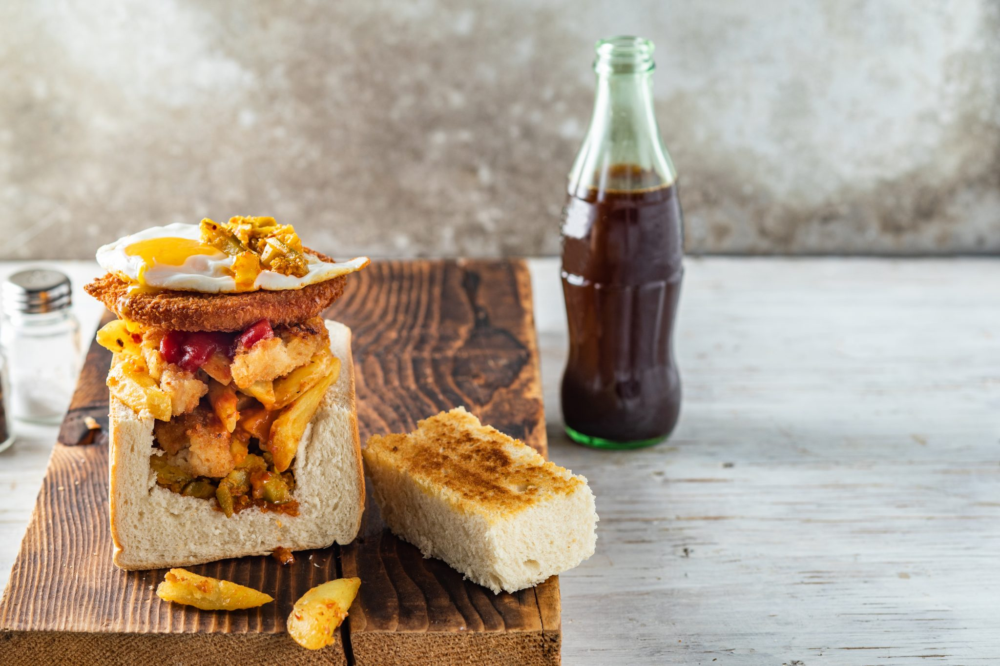

Chicken Kota Recipe

A kota is a true South African gem. Chicken strips and patties add an extra layer of yumminess to this township favourite. Enjoy!
"Kota" is an approximation of the word "quarter," for the quarter of the loaf of bread that is the base of the sandwich.
This is kind of like a bunny chow, but not. Instead, the bread is hollowed out, filled first with a layer of seasoned french fries,
then topped with optional layers of sauce, cheese, egg, and meat.
Ingredients
- 1 loaf unsliced bread
- 60ml mango achar
- 500g slap chips, fried
- salt and vinegar
- 45ml hot chilli sauce
- 150g chicken strips, cooked
- 4 slices cheddar cheese
- 4 chicken burger patties
- 4 eggs, fried
Steps
- Slice the bread into four quarters and toast each quarter.
- Hollow out the quarters and keep the pieces of bread you remove.
- Spread the achar over the hollowed-out bread.
- Season the chips with salt and vinegar and add the chicken strips. Add to the bread and achar.
- Top with cheese, chicken patties and eggs.
- Finish off with the scooped-out pieces of bread.
- Serve immediately.
Cook's Note:
- Serves four people, preparation time is ten minutes.
Return to top
Return to home page